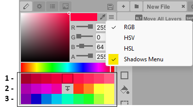
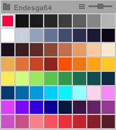
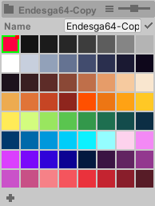

Color Editor
Adjust colors with three modes (uses Color32, 8-bit color + alpha).
RGB: Set red, green, and blue levels (0–255).
HSV: Pick a hue, then adjust saturation and brightness.
HSL: Pick a hue, then adjust saturation and lightness.
Shadows Menu

This generates three sections of color variations for the selected color.
First row: creates shadows and highlights
Second row: generates hue-shifted shadows and highlights
Third row: produces complementary colors
Press the center button to regenerate colors, and or enable Reset Shadows On Eyedropper in Preferences > General.
Color Palettes

The color palette stores a set of limited colors, ensuring visual consistency and quick color swapping while painting. Editing a palette color updates it globally across your artwork (requires the Paint Bucket tool). Modifying a palette color is not supported by the undo system.
Pixelverse includes predefined color palettes for quick selection. These preset palettes cannot be modified - you cannot add or change colors. However, you can still reorganize them by sorting colors based on saturation, brightness, etc. If you do sort the preset palettes, you can always restore the original palette order in the drop down menu.
In the drop down menu, to enable editing capabilities:
-
Create a new empty palette, or
-
Make a copy of an existing preset palette
-
Select edit

While in edit mode, you can add or delete colors, rename the palette, or import colors from current layers using the new dropdown menu option. Remember to exit edit mode when not in use since the Paint Bucket tool can accidentally modify colors while active.
Tip:
The slider adjusts the color palette's display size.